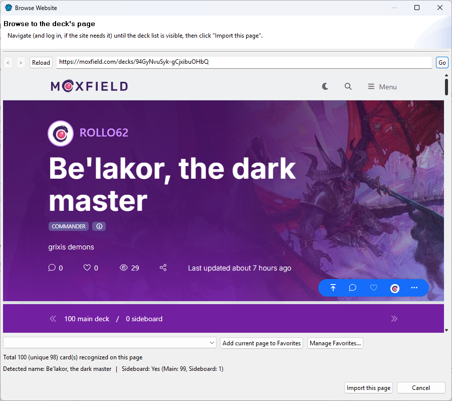

Importing from a website
Found a deck online? ManaDesk can create it straight from the deck's page.
- Choose .
- Under Contents, choose Website and paste the address of the deck page.
- Click Browse Website.... The page opens in a small browser inside ManaDesk.
- Navigate if needed (log in, switch to the deck's list view...), then import the deck once you can see it.
- Back in the wizard, ManaDesk fills in the deck's name and its format when the page states them, and
checks Also create a Sideboard when the deck has one.
- Click Next to check the list, then Finish. See Importing cards.

Supported sites
ManaDesk was tested with Aetherhub, Archidekt, deckbox.org, deckstats.net, Moxfield, mtgdecks.net,
MTGGoldfish, MTGTop8, TappedOut and TCGplayer. Other sites often work too, as long as the page shows the
card list.
- A Commander deck's commander goes to the sideboard.
- "Maybeboard" and similar sections (Considering, Wishlist...) are not imported.
- Uncheck Also create a Sideboard to import only the main deck.
Favorites
In the browser, Add current page to Favorites keeps a site at hand. Manage the list in
.
Importing from a website needs an internet connection. Website import is for decks;
to fill a collection, copy the list and use Import from Clipboard.
See also: Importing cards ·
Creating a deck